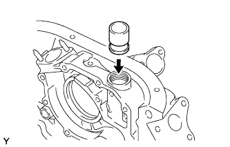
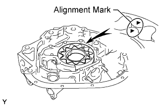
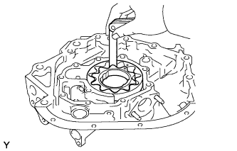
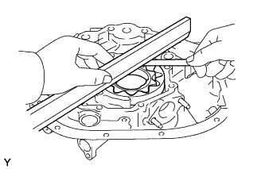
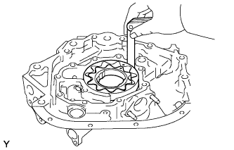

OIL PUMP > INSPECTION |
| 1. INSPECT OIL PUMP RELIEF VALVE |
 |
Coat the relief valve with engine oil and drop it into the relief valve hole.
Check that the relief valve falls in smoothly by its own weight.
If it does not, replace the relief valve. If necessary, replace the oil pump assembly.
| 2. INSPECT OIL PUMP ROTOR SET |
 |
Apply engine oil to the oil pump rotor set.
Install the oil pump rotor set to the oil pump body and check that it rotates smoothly.
 |
Inspect the rotor tip clearance.
Using a feeler gauge, measure the clearance between the drive and driven rotor tips.
 |
Inspect the rotor side clearance.
Using a feeler gauge and precision straightedge, measure the clearance between the rotors and precision straightedge.
 |
Inspect the rotor body clearance.
Using a feeler gauge, measure the clearance between the driven rotor and body.